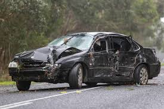

Driving with Moblie Phones
Road safety - Driving with mobile phones for teenage drivers
Road safety - Driving with mobile phones for teenage drivers
It is when a driver is using a phone while driving a Vehicle. If they are caught doing it there is a $470 fine for using the phone while driving
The normal reaction time for when driving is 1.5 seconds. However when they are using a mobile phone the reation time is increased or they do not react at all. When a driver is using a phone when driving the reaction time is increased 20 3 - 4 seconds. When this happens the vehicle will travel at least 50m befor they can react when travelling 60km an hour instead of 25m.
Driving with a mobile phone in use will cost you $470. Mobile phone casue a quater of all craches in Australia. They also nearly cause 46% of near crashes.